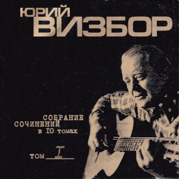

Я иду на ледоколе
Я иду на ледоколе, Ледокол идет по льду. То, трудяга, поле колет, То ледовую гряду. То прокуренною глоткой Крикнет, жалуясь в туман, То зовет с метеосводкой Город Му́рманск, то есть Мурма́нск. И какое б продвиженье Не имели б мы во льдах, Знают наше положенье, Все окрестные суда, Даже спутник с неба целит, В обьективы нас берет, Смотрит, как для мирных целей Мы долбаем крепкий лед. И какой-нибудь подводник, С бакенбардами, брюнет, Наш маршрут во льдах проводит, Навалившись на планшет, У подводника гитара И ракет большой запас И мурлычет, как котяра, Гироко́мпас, то есть компа́с. Но никто из них не видет В чудо-технику свою, Что нетрезвый, как Овидий Я на палубе стою, Что прогноз опровергая, Штормы весело трубят, Что печально, дорогая, Жить на свете без тебя.
— 16 октября 1973
Обучаю играть на гитаре
Обучаю играть на гитаре Ледокольщика Сашу Седых, Ледокол по торосу ударит - Саша крепче прихватит лады. Ученик мне достался упрямый, Он струну теребит от души. На столе у него телеграмма: "Разлюбила. Прощай. Не пиши." Улыбаясь на фотокартинке, С нами дама во льдах колесит: Нью-Игарка, мадам, Лос-Дудинка, Иностранный поселок Тикси. Нью-Игарка, мадам, Лос-Дудинка, Иностранный поселок Тикси. Я гитарой не сильно владею И с ладами порой не в ладах - Обучался у местных злодеев В тополиных московских дворах. Но для Саши я бог, между прочим, Без гитары ему не житье. Странным именем Визбор Иосич Он мне дарит почтенье свое. Ах, коварное это коварство Дальнобойный имеет гарпун. Оборона теперь и лекарство - Семь гитарных потрепанных струн. Говорит он мне: "Это детали. Ну, ошиблась в своей суете…" Обучаю играть на гитаре И учусь у людей доброте. Улыбаясь на фотокартинке, С нами дама во льдах колесит: Нью-Игарка, мадам, Лос-Дудинка, Иностранный поселок Тикси. Нью-Игарка, мадам, Лос-Дудинка, Иностранный поселок Тикси.
— 1979
Покидаю город Таллин
Покидаю город Таллин, Состоящий из проталин, На сырых ветрах стоящий, Уважающий сельдей, В море синее глядящий, Работящий и гулящий И отчасти состоящий Из невыпивших людей. Что мне шпили, что мне тальи, Я уехал от Натальи. С морем борется гремящий Пароход мой, как антей. Переборками скрипящий, Как большой и старый ящик, И отчасти состоящий Из несломанных частей. Где ты, милый город Таллин, Я плутаю без Натальи, Это было настоящим, Остальное - небольшим. И на палубе гудящей Я стою, во тьме курящий И отчасти состоящий Из нераненой души. Возвращусь я в город Таллин, Состоящий из Натальи, По сырым ночам не спящий, Ожидающий вестей, И всецело состоящий, И всецело состоящий, И всецело состоящий Из любимых мной частей.
— 21 марта 1978
Чукотка
Мы стояли с пилотом ледовой проводки, С ледокола смотрели на гаснущий день, Тихо плыл перед нами белый берег Чукотки И какой-то кораблик на зеленой воде. Там стояла девчонка по-простому одета И, казалось, в тот вечер ей было легко, И, рукой заслонившись от вечернего света, С любопытством смотрела на наш ледокол. Вот и все приключенье, да и вспомнить - чего там? Пароходик прошлепал, волнишка прошла, Но вздохнул очень странно командир вертолета, Философски заметив: "Вот такие дела"… Ледокол наш за старость из полярки списали, Вертолетчик женился, на юге сидит, Да и тот пароходик все ходит едва ли, И на нем та девчонка едва ли стоит. А потом будут в жизни дары и находки, Много встреч, много странствий и много людей, Отчего же мне снится белый берег Чукотки И какой-то кораблик на зеленой воде?
— 15-24 октября 1973
Мы вышли из зоны циклона
Мы вышли из зоны циклона, Из своры штормов и дождей, У всех появилась законно Одна из бессмертных идей: Граненых стаканов касанье, Как славно, друзья, уцелеть, Оставил циклон на прощанье Лишь вмятину в правой скуле. Он наши машины проверил И души, злодей, закружил, И каждую нашу потерю Из вороха лжи обнажил, Порядок серьезно нарушив, Сидим мы всю ночь напролет, Поскольку спасти наши души Никто, кроме нас, не придет. И с нами в моряцкой одежде, Суровых мужчин посреди, Добрейшая дама Надежда, Как все, со стаканом сидит, Не вписана в роль судовую, Паек здесь имеет и кров, Ведя свою жизнь трудовую Среди, в основном, моряков. Так с песнями мы отдыхаем, Глаголу рассудка не вняв, Заплачет четвертый механик, Надежду за талью обняв, И вилку стальную калеча, В любовь нас свою посвятит, И, чтоб описать эти речи, Не можно и буквы найти. Не скрою, и я, дорогая, Не в меру был весел тогда, Когда поживал, полагая, Что ты не такая беда, Что вольным плыву кочегаром, Семь бед оставляя вдали, Слегка задевая гитарой За меридианы земли. Рассвет, на красивости падкий, Встает перед днем трудовым. Друзья мои в полном порядке Храпят по каютам своим. Циклон удалился на сушу, Оставив пейзаж на столе, И спиртом промытые души, И вмятину в правой скуле.
— 10 декабря 1980
Полярное кольцо
Опять приходят непогоды, Через полярное кольцо, И криком гонят пароходы Из памяти твое лицо. И далеко в краю счастливом, Страна цветов, земля людей, И льды уходят из залива Эскадрой белых лебедей. И слушает радист бессменный И чей-то плач, и чей-то смех. Всю ночь кружатся над антенной Последний дождь и первый снег. И нет тебя, и слава Богу, Что здесь один иду без сна, Что эта страшная дорога Тебе никак не суждена. Минуй тебя все эти беды, Будь все печали не твои. Прийди к тебе вся моя нежность Радиограммой с ЗФИ. И в час полуночный и странный Не прячь от звезд во тьме лицо. Смотри, на пальце безымянном Горит полярное кольцо.
— 1968
Карибская песня
А начиналось дело вот как: Погасла желтая заря И наша серая подлодка В себя вобрала якоря. И белокурые морячки Нам машут с бережка платком: "Ни происшествий вам, ни качки, И девять футов под килем", А потопить нас, братцы, хрен там, И в ураган, и в полный штиль Мы из любого дифферента Торпеду вмажем вам под киль. Мы вышли в море по приказу И по приказу по домам, Мы возвращаемся на базу, А на дворе уже зима. Мы так обрадовались стуже, Мы так соскучились по ней И пьют подводники на ужин Плодово-выгодный портвейн.
— 1963
Ботик
Один рефрижиратор - Представитель кап.страны Попался раз в нешуточную вьюгу. А в миле от гиганта Поперек морской волны Шел ботик по фамилии "Калуга". Что ж вы ботик потопили, Был в нем новый патефон И портрет Эдиты Пьехи, И курительный салон. А тот рефрижиратор, Что вез рыбу для кап.стран, Вдруг протаранил ботик молчаливо. На таре из-под двина Только виден капитан Хорошего армянского разлива. "Ду ю спик инглиш, падлы," Капитан кричит седой, "Француженка быть может мать твоя? А может вы совсем уже, Пардон, шпрехен зи дойч?" Из судна отвечают: "Я, я, я", что "Я"? Советское правительство Послало документ И навело ракету на балбесов, А ботику отгрохали Огромный монумент, Которым и гордится вся Одесса. И там, внизу написали: Что ж вы ботик потопили, Был в нем новый патефон И портрет Эдиты Пьехи, И курительный салон.
— 1968
Тралфлот
Ты думаешь так - капитанская кепка, Прощальный гудок, в море вышел рыбак. Ты в этом во всем ошибаешься крепко: Все вроде бы так, а вообще-то не так. Я в рубке стою, я ору беспрестанно, Я - чистый пират: пистолет и серьга, Матросов своих, наименее пьяных Я ставлю на вахту стоять на ногах. Держитесь, родные, пока не отчалим, Тралмейстер толкнул сапогом материк, Два дня нас качали земные печали, Теперь успокоит нас север-старик. По белой ладони полночного моря Плывет мой корабль - представитель земли, И Кольский залив нам гудками повторит, Слова, что нам жены сказать не могли. Слова, что любовницы не дошептали, Слова, что текли по подушке слезой, И даже слова о которых молчали Спокойные девочки, что "на разок" А нам-то чего? - Мы герои улова, Нам море пахать поперек изобат. Мы дали начальству железное слово - Превысить заданье, судьба не судьба. Вот так мы уходим, мой друг, на рыбалку, Вот так будет завтра и было вчера, И вахту ночную с названьем "собака", Стоим и хватаемся за леера. И если осудит нас кто за отсталость, Пожалуйте бриться, вот мой пароход. Ты с нами поплавай хоть самую малость, Потом же, товарищ, сердись на тралфлот.
— Весна 1965
Флот не опозорим
Куда девались звезды, упавшие в моря? Маяк кричит тревожно, я говорю серьезно, Пока еще не поздно списаться с корабля. Но мы в морях не раз встречали зори И пили спирт, болтаясь между льдин. Мы все пройдем, но флот не опозорим, Мы все пропьем, но флот не посрамим. Лайди-лайди, лайди-лайда … Музыка громче, громче играй! Корабль наш имеет трубу и задний ход: Труба дымит опасно, винты скрипят ужасно И никому не ясно, чем кончится поход. Но все же нет печали, досады тоже нет, Видали вы едва ли, все то, что мы видали, На вас не напасешься, ребята, сигарет.
— 1976
Новая Земля
В голове моего математика Вся вселенная встала вверх дном. А у Новой Земли ходит Арктика, Ходит Арктика ходуном. Ходят белые льды, как дредноуты, Бьются, будто бы богатыри. Ах, давно бы ты мне, ах давно бы ты Написала б странички две-три. Написала б ты мне про Голландию, Где большие тюльпаны растут. Написала б ты мне про Шотландию, Где печальные песни поют. Но никак не приходит послание И от этого грустно в груди. Ни тебя, ни письма, ни Голландии, Только этот очкарик нудит. Понудит он и все ухмыляется, Блещет лысины розовый круг, А под лысиной так получается, Что Америке скоро каюк. А в Америке парни усталые, Все хлопочут, чтоб мы померли. Дайте землю, товарищи, старую, Не хочу больше Новой Земли. С математиком, серым, как олово, Скоро бросим прощанья слезу. Привезет он в Москву свою голову, Я другое совсем привезу.
— 1970
Три минуты тишины
По судну "Кострома" стучит вода, В сетях антенн качается звезда, А мы стоим и курим, мы должны Услышать три минуты тишины. Молчат во всех морях все корабли, Молчат морские станции земли, И ты ключом, приятель, не стучи, Ты эти три минуты помолчи. Быть может, на каком борту пожар, Пробоина в корме острей ножа, А может быть, арктические льды Корабль не выпускают из беды. Но тишина плывет как океан, Радист сказал: "Порядок, капитан". То осень бьет в антенны, то зима, Шесть баллов бьют по судну "Кострома".
— Весна 1965
Песня о подводниках
Задраены верхние люки, Штурвала блестит колесо. Ввиду долгосрочной разлуки Всем выдан Абрау-Дюрсо. Прощайте, красотки, прощай небосвод, Подводная лодка уходит под лед, Подводная лодка - морская гроза, Под черной пилоткой стальные глаза. Под грустную музыку Верди, Компасы дают перебой, Голодные бродят медведи У штурмана над головой. По многим известным причинам Нам девушки все хороши. Стоят на сугробе мужчины, На полюсе нет ни души. Прощайте, красотки, прощай небосвод, Подводная лодка уходит под лед, Подводная лодка - морская гроза, Столичная водка, стальные глаза.
— 1970
Якоря не бросать
"Якоря не бросать!" - Мы давно знаем старую заповедь, Не бросать их у стенок, Где эти сигналы горят. Якоря не бросать! Не читайте нам длинную проповедь: Мы немножечко в курсе, Где ставить теперь якоря. Мы бросаем их в море, В холодную льдистую воду, Мы выходим в эфир И среди этой всей кутерьмы Нам пропишут синоптики, Словно лекарство погоду, А погоду на море, Пожалуй что делаем мы. Мы бросаем потом якоря В полутемных квартирах, Где за дверью растресканной Тени соседей снуют, Не галантной походкой - Привыкли ходить по настилам, Прогибаем паркет Никуда не плывущих кают. Словно малые дети, Кричат по ночам пароходы, Им по теплым заливам Придется немало скучать И волнуются чайки От неудачной охоты И всю ночь якоря На шинели сурово молчат. Но потом им блистать Под тропическим солнцем и зноем, На военных парадах, На шумных морских вечерах, Якоря не бросать - Это дело довольно простое, Ну, а что оставлять нам? Об этом подумать пора. Мы не бросим и осень, Не бросим и топких, и снежных, Голубых, нескончаемых, Вечно любимых дорог. На чугунных цепях Опустили мы наши надежды У глухих континентов Еще не открытых тревог.
— 1963
Да будет старт
А мне давно знакомо время старта - Оно начало всякого пути. Мою орбиту не ищи на картах, Карандашом в пространстве не черти. Поверь, что есть она и вечно быть ей, Услышь ее стремительный разбег. Она легла к подножию открытий, К подножью нежности моей к тебе, Нежности моей к тебе. Пускай она ничем не знаменита, С земной орбитой незачем равнять Друзей моих забот, мою орбиту И этот поиск вечного огня. Да будет старт и в первый раз, и в сотый, Крутой полет над крышами жилья, И на орбиту, близкую к расчетной, Уже выходят все мои друзья, Выходят все мои друзья. Нет привала на пути крутом, Где гроза сливается с грозою, "До свиданья!"- плавится бетон, Звездолет становится звездою. Да будет старт и в первый раз, и в сотый, Крутой полет над крышами жилья, И на орбиту, близкую к расчетной, Уже выходят все мои друзья, Выходят все мои друзья.
Кострома
То ли снег принесло с земли, То ли дождь, не пойму сама, И зовут меня корабли: "Кострома",- кричат,- "Кострома". Лето мне что зима для вас, А зимою - опять зима, Пляшут волны то твист, то вальс, "Кострома", стучат, "Кострома". И немало жестоких ран Написали на мне шторма, Как рыбацкий глубокий шрам - "Кострома", уж ты, "Кострома". Но и в центре полярных вьюг, Что, казалось, сойдешь с ума, Я на север шла и на юг: "Кострома", вперед, "Кострома". Оставляю я след вдали, Рыбой грузны мои трюма, И антенны зовут с земли: "Кострома", домой, "Кострома"! Привезу я ваших ребят И два дня отдохну сама. Вот товарищи мне трубят: "Кострома" пришла, "Кострома".
— Весна 1965
Бригитта
Приходи ко мне, Бригитта, Как стемнеет, приходи. Все, что было, то забыто, Все, что будет - впереди. От рассвета до заката Всюду грустно на земле. Лишь глаза твои, как карта Для заблудших кораблей. Но старпом не верит "липе", Ночь старпому - не указ. Я несусь, как чайный клипер, Ну, не клипер, так баркас. На борту пылают битвы, Разноглясья до крови, Паруса мои пробиты Бомбардиршами любви. Я несусь куда-то мимо И с похмелья, по-утру, Городницкого и Кима Песни громкие ору. Мне подтягивает свита, Бьет бутылки до зари, О, Бригитта, о, Бригитта, Путь мой дальний озари. Но я устал от этой роли, Не пират я в этот раз. Я сажусь на мотороллер, Нажимаю полный газ, Обгоняю пару МАЗов, Привожу в инфаркт ГАИ… Ох, какая ж ты зараза, Даже рифм не подобрать.
— 1964
Я когда-то состарюсь
Я когда-то состарюсь, Память временем смоет, Если будут подарки Мне к тому рубежу,- Не дарите мне берег, Подарите мне море, Я за это, ребята, Вам спасибо скажу, Я за это, ребята, Вам спасибо скажу. Поплыву я по морю, Свою жизнь вспоминая, Вспоминая свой город, Где остались друзья, Где все улицы в море, Словно реки впадают, И дома, как баркасы, На приколе стоят. Что же мне еще надо? Да, пожалуй, и хватит, Лишь бы старенький дизель Безотказно служил, Лишь бы руки устали На полуночной вахте, Чтоб почувствовать снова, Что пока что ты жив. Лишь бы я возвращался, Знаменитый и старый, Лишь бы доски причала, Проходя, прогибал, Лишь бы старый товарищ, От работы усталый, С молчаливой улыбкой Руку мне пожимал. Я когда-то состарюсь, Память временем смоет, Если будут подарки Мне к тому рубежу,- Не дарите мне берег, Подарите мне море, Я за это, ребята, Вам спасибо скажу.
— 23 мая 1974
Окраина земная
Я на земле бываю редко, Ты адрес мой другой имей: На карте маленькая клетка Вся в голубом - в цветах морей. Там ветры волны нагоняют, Там в шторм работают суда, Гремит окраина земная - Пересоленая вода. Под самой северной звездою, И без луны, и при луне, Здесь тралы ходят под водою, Разинув пасти в глубине. И рыбы длинные не знают, Какая движется беда, Гремит окраина земная - Пересоленая вода. С бортов, ветрами иссеченных, Мы зорче вроде бы вдвойне, Вот фотографии девчонок Качают штормы на стене. Приснись мне женщина лесная, По облакам приди сюда, Гремит окраина земная - Пересоленая вода. Мы словно пахари на поле, И тралы родственны плугам, Но только снегом дышит полюс, Сгоняя штормы к берегам. То вечный день, то ночь без края - Свидетель нашего труда, Гремит окраина земная - Пересоленая вода. И даже там, на теплом юге, Где вроде создан рай земной, Качают сны мои фелюги, Качают койку подо мной, Что красота мне расписная? Мне корешей своих видать, Гремит окраина земная - Пересоленая вода.
— Весна 1965
Штили выметает облаками
Штили выметая облаками И, спускаясь с этих облаков, Штормы ходят с мокрыми руками И стучатся в стекла маяков. Это все не очень-то красиво, Вечера уходят без следа, Огонек лампады керосинной Светит на ушедшие года. Разорви сомнительные путы, Как ты есть, предстань перед грозой. Линия страдания, как-будто Тянется за черный горизонт. И как будто страшную потерю, Океан оплакивает мой, Как несостоятельный истерик, Бьется все о камни головой. Мы переживем все эти муки, Мы вернемся к синим чудесам, Тяжкую замедленность разлуки На кострах мы пустим к небесам. Белым чайкам сухари мы скормим, Песням продадимся мы в рабы, Будем понимать мы эти штормы, Как желанный повод для борьбы.
— Весна 1965
Если вы хоть раз бывали в плаванье
Если вы хоть раз бывали в плаванье, Если вам снились города, Стало быть, в отдаленной гавани Кто-то вас должен ожидать. Здравствуйте, за море ходившие И в свои приплывшие места,- Штурманы, север покорившие, Севером помятые борта. Такая работа - То лед, то вода. В высоких широтах И снова знакомо Бежит за кормой Дорога из дома, Дорога домой. Бегаем у самого у полюса, Сто штормов вроде бы прошли, Ждать, пока море успокоится, Нам нельзя: не за этим шли. Палуба уж больше не качается, Берег обещает нам уют… Плаванье когда-нибудь кончается Там, где нас родные люди ждут. В общем, нам в хорошее все верится, А еще море нам дано. Шарик наш потихоньку вертится, В кубрике крутится кино. Палуба промокшая качается, Брызги долетают до кают… Плаванье когда-нибудь кончается Там, где нас родные люди ждут.
— 1974
Остров Путятин
Снова плывут на закате Мимо него корабли - Маленький остров Путятин Возле Великой земли. Плаваем мы не от скуки, Ищем не просто тревог: Штопаем раны разлуки Серою ниткой дорог. Нам это все не впервые - Письма с Востока писать. Тучи плывут грозовые По часовым поясам. Свистнут морские пассаты По городским площадям, В старых домах адресаты Почту опять поглядят. Все мы, конечно, вернемся - Въедут в закат поезда, Девушкам мы поклянемся Не уезжать никогда. Только с какой это стати Снятся нам все корабли? Маленький остров Путятин, Возле Великой земли…
— 1963